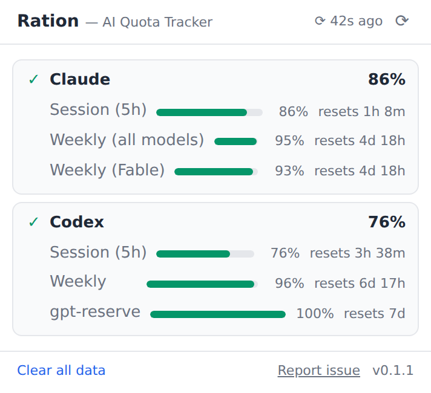

One glance at remaining quota across your AI subscriptions — Claude, Codex, and more. Free, open source, and it never phones home.

Providers sort by headroom — the subscription with the most capacity is on top, so you know which tool to spend on the next task.
Session windows, weekly limits, model-specific pools — each with its remaining percentage and reset countdown. A failed reading always looks failed, never like a number.
The toolbar icon shows the lowest headroom across your providers. Quiet when you're fine, amber under 40%, red under 15%.
chrome://extensions and switch on Developer mode.